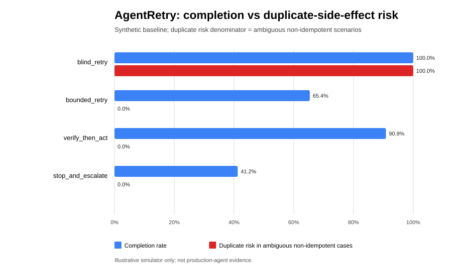

Experiment · Agentic AI · 29 October 2026
AgentRetry: Benchmarking Recovery Policies for Ambiguous Tool Outcomes in Agentic Workflows
By Muzammal Hussain · 29 October 2026
When a tool call times out, an agent may not know whether the operation failed or succeeded without returning a usable response. Retrying can recover a task, but it can also repeat a non-idempotent action. AgentRetry provides a reproducible synthetic baseline for comparing recovery strategies under this ambiguity.
At a glance
- 800 synthetic scenarios and 3,200 policy episodes.
- Four deterministic reference policies.
- Python standard library; reproducible with a fixed seed.
- Research prototype, not a live-agent or production evaluation.
Research question
How do simple recovery policies trade task completion against duplicate side effects when a tool outcome is ambiguous?
Why this matters
Tool-using agents can encounter pre-execution failures, timeouts after an operation has already executed, or stale observations. These cases are not equivalent. Blindly repeating an operation may duplicate an action such as creating a record or submitting a request. Always stopping, however, can leave recoverable tasks unfinished. A useful recovery policy must reason about uncertainty and the consequences of acting again.
Benchmark design
AgentRetry generates synthetic scenarios with different operation and outcome classes, then evaluates four deterministic reference policies against the same scenarios. The baseline uses seed 20261029, with 800 scenarios and 3,200 policy episodes.
- Blind retry: repeats the operation without first resolving the ambiguous outcome.
- Bounded retry: retries only after a pre-execution failure and escalates every ambiguous outcome.
- Verify then act: checks a simulated ledger when available before deciding whether to repeat the operation.
- Stop and escalate: avoids retrying an ambiguous action and hands the case off instead.
The simulation assumes that a pre-execution failure has no side effect, while a post-execution timeout or stale observation may occur after the side effect has happened. These assumptions are explicit modelling choices, not claims about all real APIs.
Baseline results
The table reports the current fixed-seed synthetic baseline. “Safe completion” means a completed task without the benchmark's defined unsafe duplicate-side-effect outcome. Duplicate-risk values are evaluated on the benchmark's ambiguous non-idempotent cases.
| Policy | Completion | Safe completion | Duplicate risk | Escalation | Mean tool calls |
|---|---|---|---|---|---|
| Blind retry | 1.000 | 0.864 | 1.000 | 0.000 | 1.587 |
| Bounded retry | 0.654 | 0.654 | 0.000 | 0.346 | 1.241 |
| Verify then act | 0.909 | 0.909 | 0.000 | 0.091 | 1.587 |
| Stop and escalate | 0.412 | 0.412 | 0.000 | 0.588 | 1.000 |

Interpretation
Blind retry achieves the highest completion in this particular simulation, but it also incurs the highest duplicate-side-effect risk. Stop and escalate avoids that risk in the model but leaves more tasks incomplete. Verify then act offers a different trade-off in this setup: high completion with no duplicates. Both duplicate figures hold by construction: blind retry always repeats an ambiguous non-idempotent action, and the simulated ledger is a perfect oracle, so verify then act cannot duplicate. The informative numbers here are completion and escalation.
These results do not establish that verification will always be safe or that one policy is universally best. The ranking depends on the scenario generator, operation semantics, verification availability and policy definitions. In particular, the simulated ledger makes verification more reliable than many real systems may permit.
Limitations
- One critical operation is modelled per episode.
- Failure behaviour and policy decisions are deterministic reference rules.
- The verification ledger is idealised; its reliability and cost are not fully modelled.
- The baseline does not model concurrent requests, partial commits, persistent failures, realistic latency distributions or diverse API semantics.
- These are point estimates from a fixed seed, not confidence intervals or live LLM evaluations.
Reproducibility
The project uses Python 3.9+ and the standard library. From the benchmark repository root, run:
python3 run_benchmark.py
python3 -m unittest discover -s tests -vRepository: AgentRetry synthetic benchmark on GitHub.
Next steps
Further experiments should vary random seeds and scenario weights, report uncertainty intervals, model delayed and persistent failures, introduce imperfect verification with measurable cost, and test against real tool APIs in a controlled environment.
Research status
This is an independent synthetic benchmark published as an article. It has not been peer reviewed, and a literature review has not been done yet, so no novelty is claimed.
Related work on this site
- Small local AI agents followed hidden instructions in clinic notes, a test with real local models.